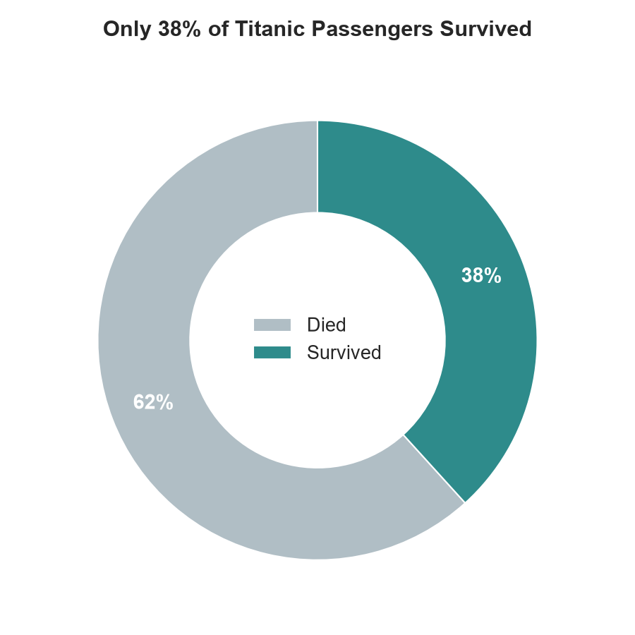
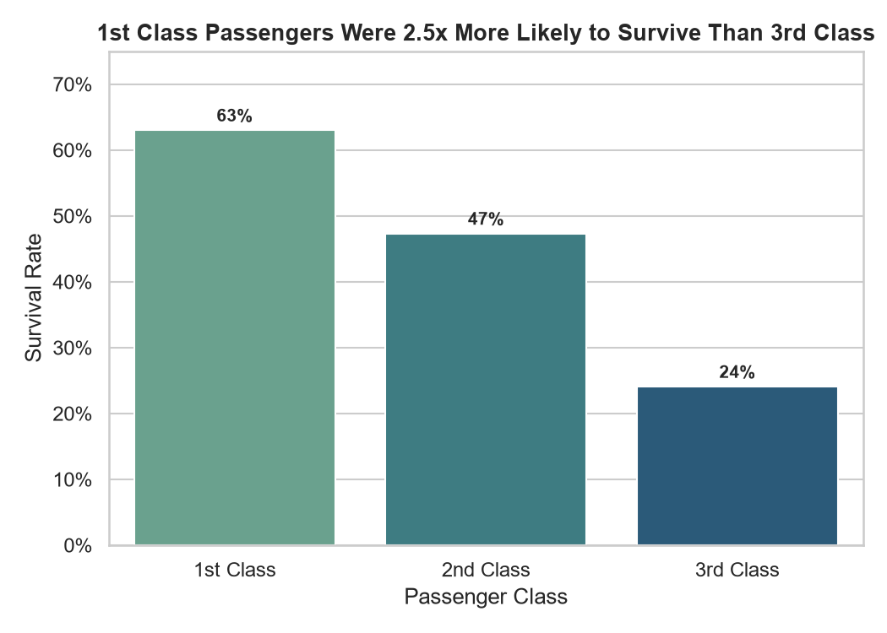
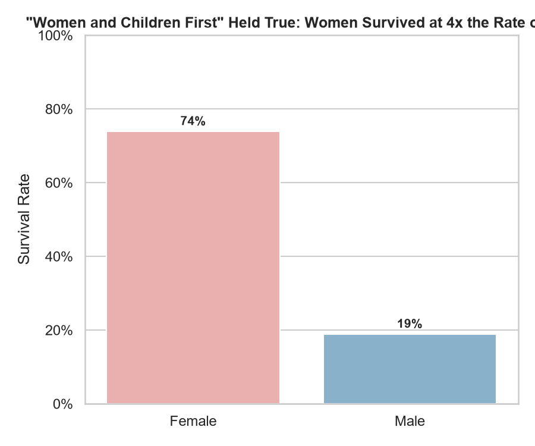
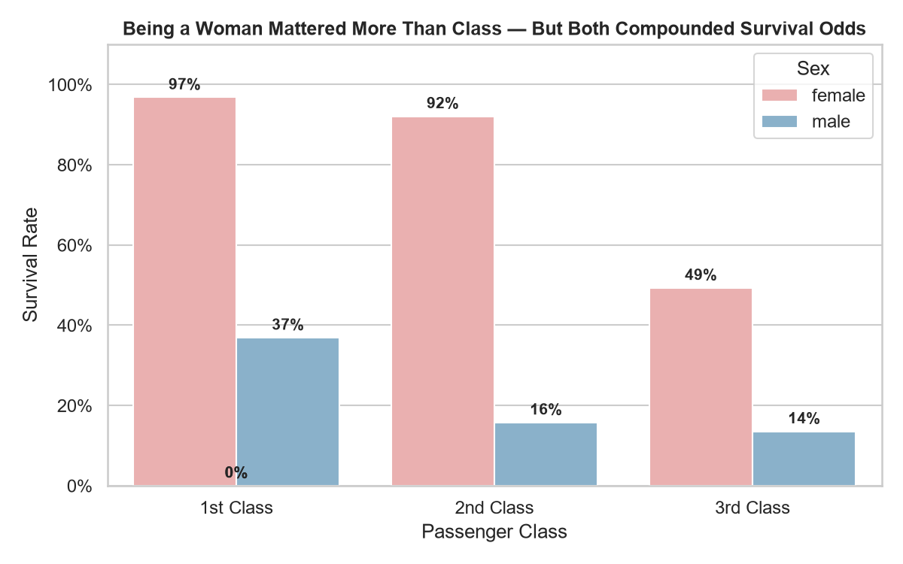
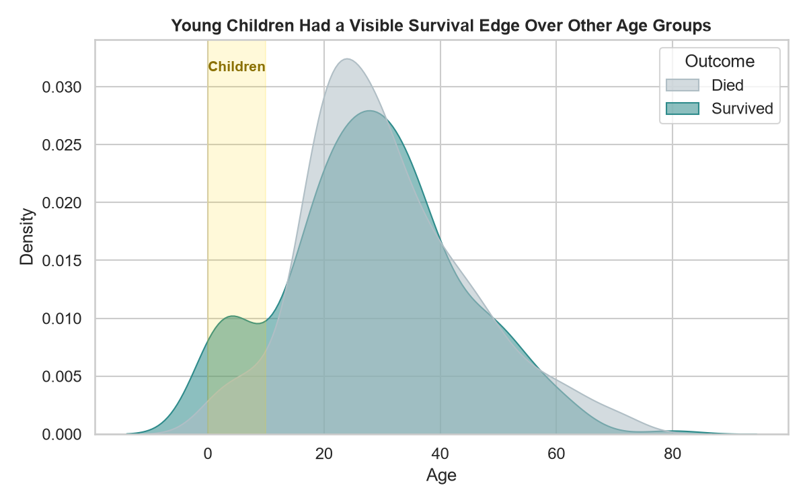
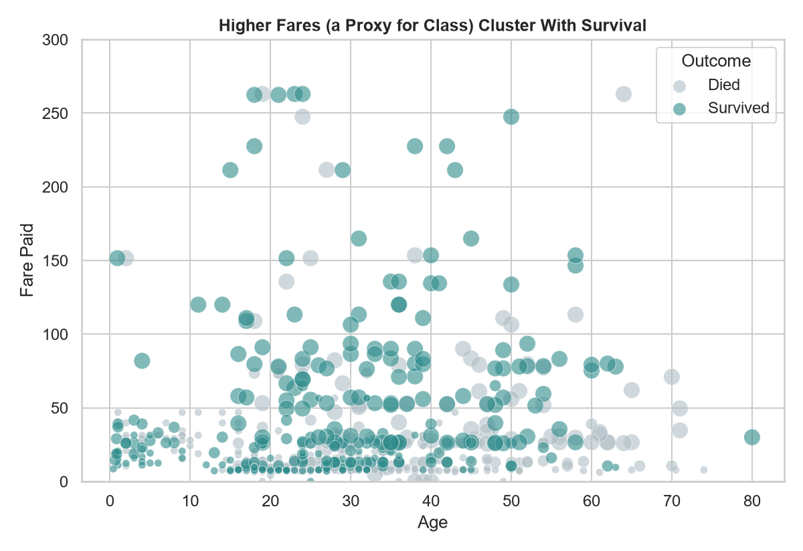
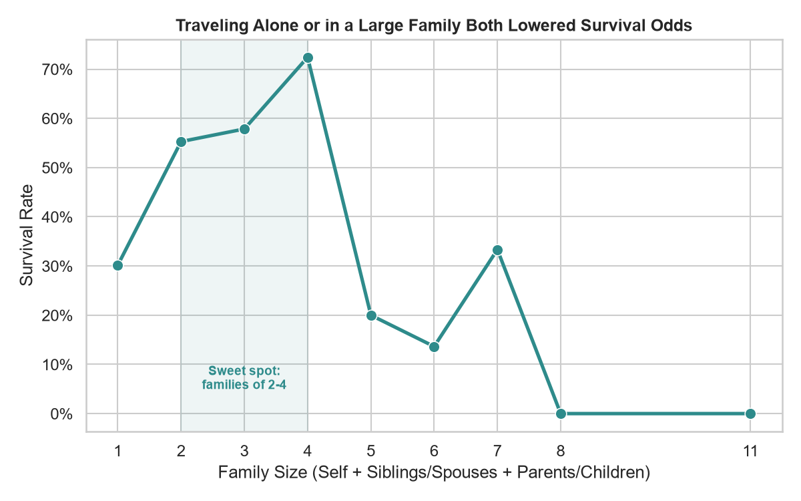

A data story built from 891 passenger records | CodeAlpha Data Analytics Internship — Task 3

Out of 891 passengers on board, only 38% survived — this is the number every other chart below explains.

1st class passengers survived at roughly 63%, more than double the ~24% survival rate in 3rd class — likely tied to cabin location and lifeboat access.

Women survived at about 74% versus roughly 19% for men, reflecting the 'women and children first' evacuation protocol.

A woman in 1st class had the best odds by far; a man in 3rd class had the worst — class and gender stack on top of each other.

The survival-density curve skews younger — children under 10 show a visibly better survival rate than most other age bands.

Higher-fare tickets (bigger dots = higher class) cluster more with survival, reinforcing that wealth and class access shaped outcomes.

Solo travelers and very large families (5+) fared worse than small families of 2-4 — small groups could coordinate and board together more easily.